Con Jamboard podemos:
- Escribir fórmulas en una pantalla que ven nuestros alumnos
- Poner imágenes (esquemas, diagramas, fotos, obras de arte,...) y anotar sobre ellas
- Subir documentos de texto, presentaciones, hojas de datos y actuar encima de manera manual (subrayando, resaltando, tachando, destacando,...)
- Utilizar una pizarra durante nuestras clases online
y permitir (o no) que simultáneamente lo hagan los estudiantes.
El resultado lo podemos grabar y exportar en diferentes formatos.
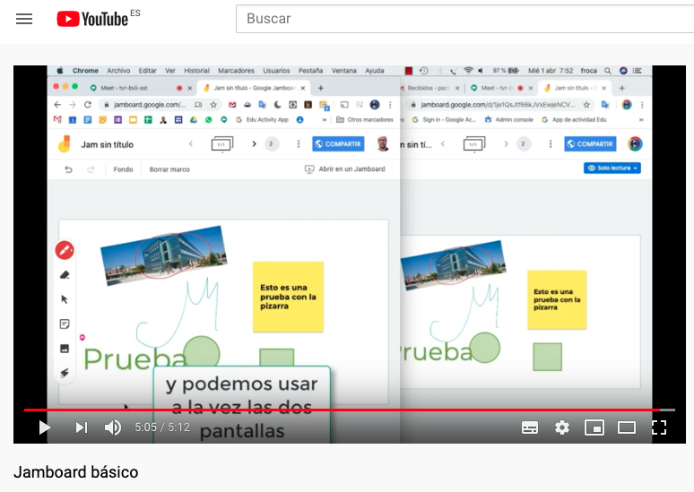
Introducción
En este tutorial aprenderás a cómo iniciarte en la pizarra colaborativa Jamboard, sus herramientas principales, así como a integrarla en las videoconferencias de clase o tutoría.
Si conoces la parte básica, puedes avanzar hasta la sección de tu interés.
El tutorial se irá actualizando conforme lo haga la aplicación, así como con las cuestiones planteadas en las sesiones y talleres online.
Puedes comenzar a utilizarla de diferentes maneras:
Desde la barra del navegador
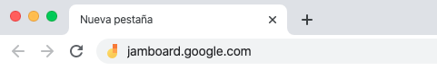
Basta escribir en el navegador https://jamboard.google.com/
Luego podemos crear una nueva pizarra desde , o bien acceder a una existente clicando en y escribiendo el código que ha compartido el docente
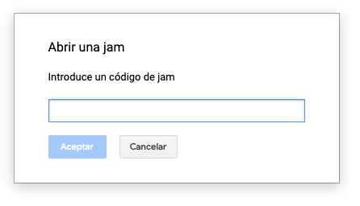
Acceder desde GSuite (Gmail, Google Calendar)
Pulsa los nueve puntos de acceso a las aplicaciones Google y elegir Jamboard.
Acceso directo desde Drive
Des Dirve, pulsar el signo "+" para crear un nuevo documento
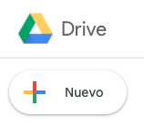
Selecciona "Más >" y del menú obtenido descender hasta encontrar "Google Jamboard"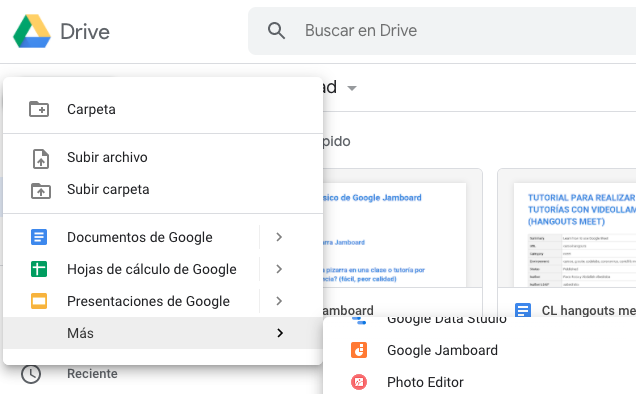
Acceso desde móvil o tablet (Aplicación)
Descargar la aplicación Jamboard:
1. Escritura a mano, forma y reconocimiento de bocetos
Desde el ordenador se puede escribir a mano, insertar notas, imágenes y utilizar un puntero.
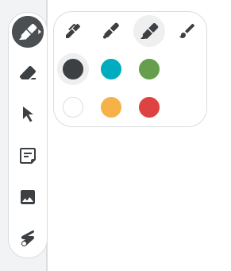
Desde el móvil o la tablet (se aconseja utilizarlo como pizarra) se puede además utilizar el reconocimiento de texto y de formas.
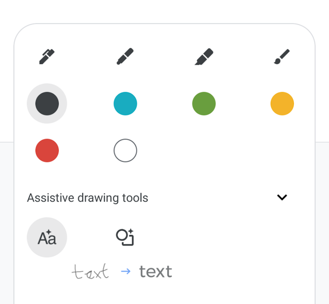
2. Insertar desde la unidad Drive
Desde el móvil o tablet además es posible insertar documentos, pdf, hojas de cálculo, diapositivas o imágenes (incluidos GIF) desde su Google Drive en Jamboard.
Seleccionar el ícono +, clicar en Google Drive y arrastrar y soltar el archivo deseado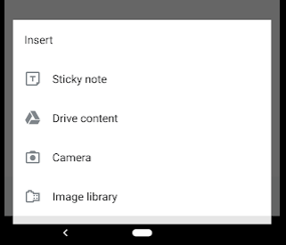
Sobre el elemento agregado de varias páginas (o varias diapositivas) y pulsando dos veces sobre él nos sale un minivisor (al que lo comparte, no a los estudiantes) y se puede uno ir desplazando por el documento y seleccionar páginas o diapositivas a compartir.
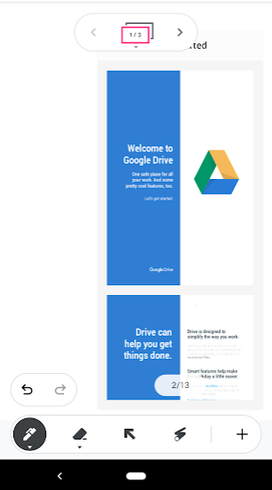
3. Buscar, seleccionar, insertar
Además es posible, desde el mininavegador incluido, ingresar una URL o término de búsqueda, para navegar a una web. Con el icono de tijera, se selecciona un trozo y se pega a la pizarra.
4. Varias pizarras
A cada una de las pizarras se denomina MARCO, y arriba es posible navegar entre ellas pulsando las flechas:
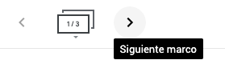
- Iniciamos una pizarra de Jamboard (que podemos sacar a una ventana separada).
- Abrimos con Meet (guía rápida de Meet, tutorial de Meet) una clase o tutoría
- Seleccionamos Mostrar mi pantalla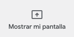
- Elegimos "Toda la pantalla" o "una ventana" si Jamboard estaba en ventana independiente 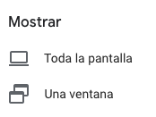
- Y vamos a Jamboard (que ya lo verán los asistentes).

- Iniciamos una pizarra de Jamboard. Le damos a arriba a la derecha.
- Comparte de acuerdo a las necesidades de la clase, determinando exactamente con quién (público, sólo para estudiantes de la ujaen.es, solo para algunos correos electrónicos determinados,...) y con qué permisos (ver, editar,...).
- Copiamos el enlace para compartir
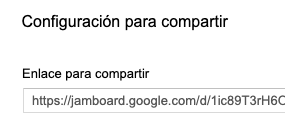
- Abrimos con Meet una clase o tutoría
- Copiamos el enlace anterior en el chat de Meet (guía rápida de Meet, tutorial de Meet)
CONSEJO: En este caso lo ideal es trabajar en el Jamboard con a tableta o el móvil, y con Meet en el ordenador. De esta manera, los estudiantes podrán cambiar de una ventana a otra, alternando entre ver el Jamboard y su videollamada.
Este método da mayor calidad de las imágenes al que las recibe y además permite más funcionalidades para los estudiantes.
Generar la clase/tutoría desde el calendario y añadir Meet y Jamboard
- Generamos un evento de clase o tutoría en el calendario de Google
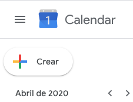
- Entramos en las opciones y añadimos conferencia
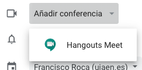
- Más abajo, Añadimos un archivo pulsando el clip:
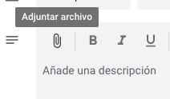
- Seleccionamos el archivo de la pizarra que queramos compartir
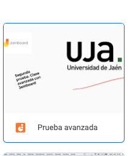
- Publicamos nuestro calendario en la web (Curso GSuite)
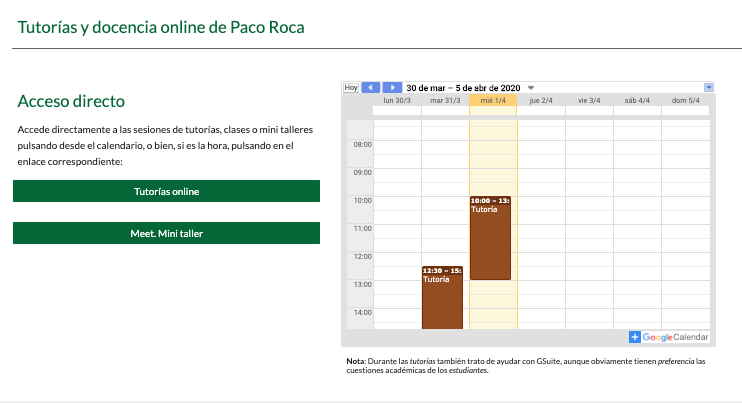
Cuando el estudiante acceda al calendario tendrá además de la videoclase la pizarra compartida según el método avanzado.
2.Utilizar el móvil o una tablet como pizarra a la vez que la videoconferencia.
Para mejorar nuestro trabajo durante la sesión podemos utilizar simultáneamente un ordenador y un móvil o tablet (mejor esto último) con Jamboard y Meet instalado.
- Iniciamos en el ordenador el navegador, en Chrome, con nuestra cuenta de GSuite de la Universidad
- Desde el móvil o el tablet iniciamos la aplicación Jamboard y creamos una pizarra (un Jam). Le ponemos un nombre (parte superior derecha de los tres puntos)
- En el ordenador abrimos la ventana http://jamboard.google.com. Veremos que está la nueva pizarra creada en el móvil o tableta.
Ya podemos realizar una vídeoclase o tutoría, y tras compartir la pizarra (ver pasos anteriores) ésta la podremos manejar desde el móvil.
Compartir la sesión (pizarra) desde la aplicación
Para permitir que los usuarios vean o editen tu jam:
- Abre la aplicación Jamboard.
- Abre o inicia una jam.
- Toca Más
 Añadir a personas.
Añadir a personas. - Introduce un nombre o una dirección de correo electrónico y selecciona si esa persona podrá editar la jam o solo verla.
Para compartir tu jam en formato PDF:
- Abre la aplicación Jamboard.
- Abre o inicia una jam.
- Arriba a la derecha, toca Más Compartir la jam como PDF.
- Selecciona cómo quieres enviar el archivo PDF.
Para compartir un único marco como archivo PNG:
- Abre la aplicación Jamboard.
- Abre o inicia una jam.
- Accede al marco que quieres compartir.
- Arriba a la derecha, toca Más Compartir este marco como una imagen.
- Selecciona cómo quieres enviar la imagen.
Compartir la sesión (pizarra) desde tu ordenador
Para permitir que los usuarios vean o editen tu jam:
- Abre Jamboard en una ventana del navegador.
- Abre o inicia una jam.
- Arriba a la derecha, haz clic en Compartir.
- Introduce un nombre o una dirección de correo electrónico y selecciona si esa persona podrá editar la jam o solo verla.
- Haz clic en Listo.
Para compartir la jam como un archivo desde tu ordenador, primero descarga el archivo PDF o PNG. A continuación, envía el archivo a través de otro programa.
- Abre Jamboard.
- Abre o inicia una jam.
- Arriba a la derecha, haz clic en Más Descargar como PDF o Guardar marco como imagen.
- Abre un programa para compartir el archivo.
- Guía rápida (Google) (ver parte final)
- Curso de Jamboard (pequeñas píldoras)
- Creando materiales con Jamboard (ejemplo de uso)